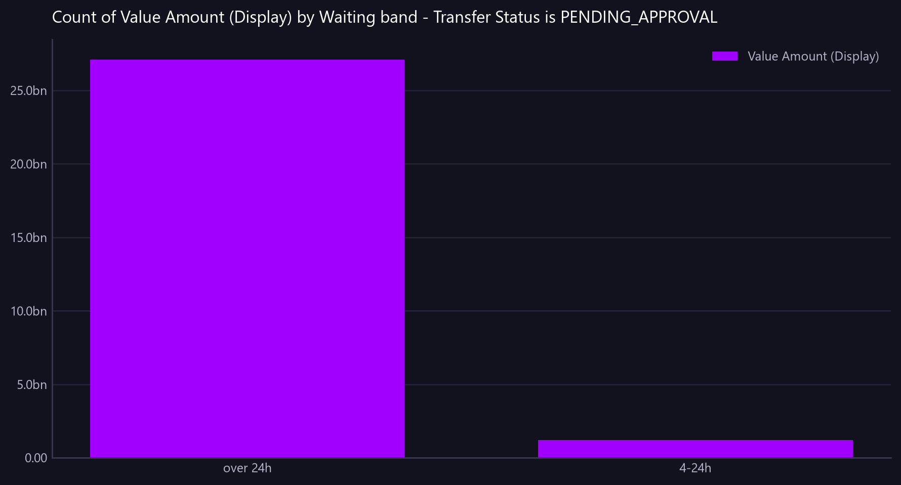

Count of Value Amount (Display) by Waiting band - Transfer Status is PENDING_APPROVAL
Value awaiting approval, banded by how long it has been waiting. A snapshot of how bad the queue is now.
Asked as What is sitting in the approval queue, and how long has it been waiting? I want to see the value at risk in each ageing band.

count peaks at 198, against 27.1bn for the largest series, so plotting it would be a flat line on the axis. It is in the table.
Commentary
The report displays pending transfers awaiting approval, categorized by how long they have been in the queue. There are 198 transfers that have been waiting for over 24 hours, with a total value at risk of 27,087,807,059.43. In the 4-24 hour waiting band, there are 9 transfers with a value at risk of 1,211,420,382.62. The majority of the value at risk is concentrated in the over 24-hour band, which may warrant closer examination to ensure timely processing and mitigate potential risks.
| Waiting band | count | Value Amount (Display) |
|---|---|---|
| over 24h | 198.00 | 27,087,807,059.43 |
| 4-24h | 9.00 | 1,211,420,382.62 |
Limitations of this view
- The view is scoped to transfers pending approval as of the most recent data timestamp.
- The value amounts are in GBP, using static synthetic FX rates.
- Data classification: synthetic, non-production.
Downloads
{kind=link}
The Markdown documents everything considered, so a reader can hand it to an AI and ask follow-up questions about this view.
How this was produced
{
"view": "nostro_transfer",
"sheet": "Nostro Transfer View",
"source_file": "synthetic_liquidity_month.xlsx",
"mode": "aggregate",
"filters": [
{
"column": "Transfer Status",
"operator": "eq",
"value": "PENDING_APPROVAL"
}
],
"group_by": [
"Waiting band"
],
"time_bucket": null,
"measures": [
"count of rows",
"sum of Value Amount (Display)"
],
"columns": [],
"sort_by": null,
"limit": null,
"join": null,
"derived": [
"Waiting",
"Waiting band"
],
"currency_corrections": [],
"data_as_of": "2026-08-19T01:21:56",
"measure": "",
"aggregation": "count",
"rows_in_view": 4781,
"rows_after_filters": 207,
"rows_returned": 2,
"executed_at": "2026-08-20T11:30:05"
}